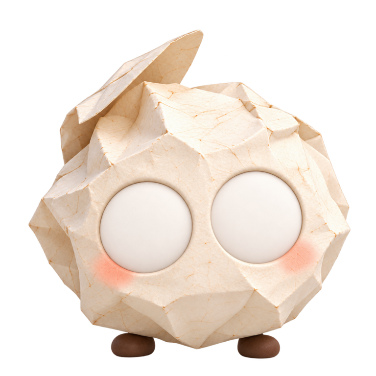

原来的小纸团
定制链路预告 / 0.12.6
折纸团，留到下一版。
0.12.5 先把平面小团子定型。这里保留折纸团作为下一版定制形象示例；三个按钮用于检查当前平面角色的实时动作是否稳定。
点一个动作后窗口会暂时收起，请直接看桌面右下角的小纸团。击掌需要再点它举起的手。
0.12.6 开发验证入口
正在检查火山方舟配置…
生成会调用你已配置的方舟账号并产生模型费用；没有密钥时按钮保持不可用。视频只播放一次，结束后回到实时角色。

此刻 / 一起练习看见喜欢
所有尝试都可撤回
可爱，不用一次说清楚。
先选一个直觉喜欢的，再一次只改一个地方。
放在一起，才看得出。
小衣橱
点一下试穿。皮肤、花纹和小表情都会保留。
给衣服挑个颜色
回到桌面 / 实际显示宽度 308 px
先喝两口水拿起手边的杯子，喝两口，再放回去。